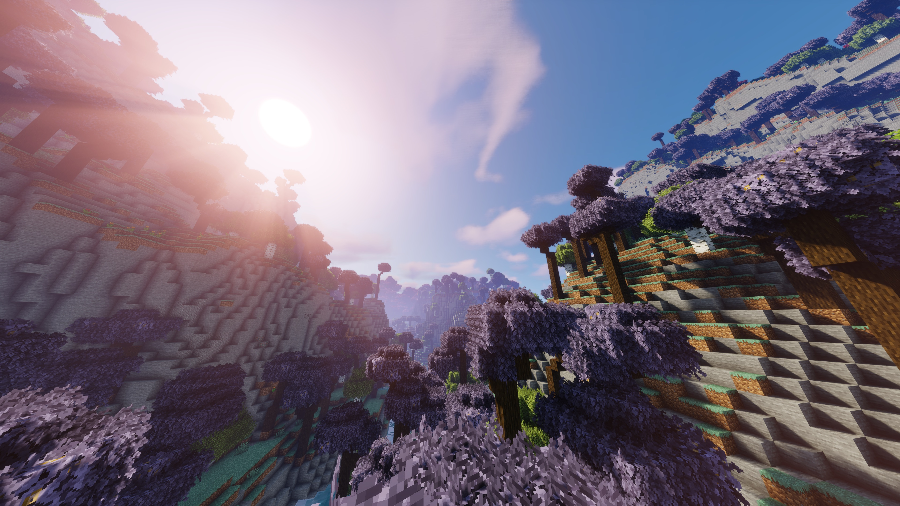

Updates page
This is where I'll be publishing news about modpacks on the site.
This entirely new version add more features compared to the 1.20.1 version. Like
a new specular effect for water, a new texture
that adds more living in the world with
animation or bushy leaves.
This new version adds animals too, with the
Naturalist mod and more stuff.
Click on the image to check It out.
